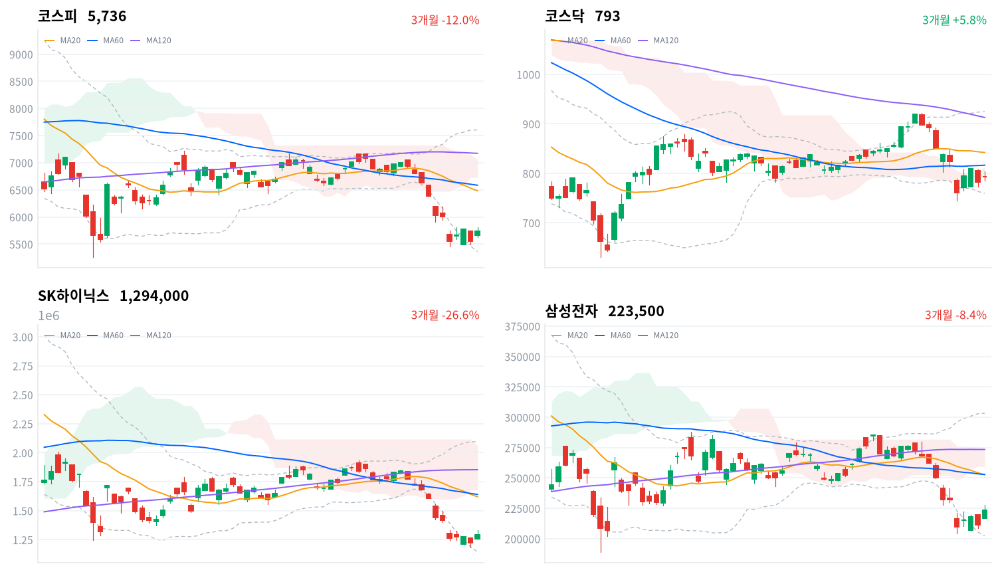

직전 미국장 나스닥이 보합이고 한국장 동안 미국 선물이 내렸는데도 코스피는 전날 낙폭의 대부분을 되찾았다. 외국인 매수가 삼성전자·SK하이닉스에 몰렸고, 행동주의 펀드의 지분 공개로 SK가 급등했다.
해외 재료보다 국내 외국인 수급의 몫이 큰 반등으로 판단한다. 이 매수가 이어지는지는 10월 22일 금융통화위원회를 지난 뒤 세 세션의 외국인 수급으로 확인한다.
코스피가 아시아 네 지수 평균보다 3.13%포인트 더 올랐다. 오전 10시 51분 유가증권시장에 매수 사이드카가 발동됐고, 외국인은 하루 만에 순매수로 돌아섰다(당일 잠정). 이로써 10월 19일부터 세 세션의 외국인 코스피 순매수 합계는 2,456억원 순매수가 됐다.
장 마감 뒤 보도는 미국 AI 기업의 실적 호조, 국내 반도체 수출 증가, 전날 급락에 따른 반발 매수로 상승을 설명한다. 반발 매수라는 설명에는 동의하지만, 미국 쪽 가격은 위험선호가 돌아왔다고 말하지 않는다. 직전 10월 20일 미국 세션에서 나스닥은 0.02% 내렸고, 한국 정규장 동안 나스닥 선물은 0.56% 내렸다. 같은 반도체 시장인 대만가권도 1.28% 오르는 데 그쳤다. 그래서 오늘 상승의 상당 부분은 미국 재료보다 한국 안의 외국인 수급에서 나왔다고 본다.
오늘 반등은 외국인 매도가 소진되는 국면의 시작으로 판단한다. 10월 둘째 주 하루 수조원씩 팔던 외국인이 세 세션 합계로는 순매수로 돌아섰고, 원화는 반도체 업체의 달러 매도 물량에 연저점을 경신했다는 보도가 나올 만큼 강했다. 미국 AI 실적 보도와 전날 3.73% 급락 뒤의 반발이 겹친 하루짜리 반등이었을 수도 있다. 장중 고점에서 120포인트 가까이 밀린 뒤 하루 범위 중간에서 마감한 점은 그 설명과 부합한다. 다만 세 세션 합계를 순매수로 돌린 것은 오늘 하루의 매수다. 두 설명은 10월 22일·23일·26일 세 세션의 외국인 코스피 순매수 합계와 10월 26일 코스피 종가로 확인한다.
하루 반등만으로 외국인 매도가 끝났다고 보기는 이르고, 그래서 새로 제안할 상품은 없다. 반도체 대형주에 거래가 몰렸지만 이 매수가 외국인의 방향 전환인지 전날 급락의 되돌림인지는 아직 판단하지 않는다. 가장 가까운 결정적 일정은 10월 22일 금융통화위원회다. 금리 인상 신호가 나와도 외국인이 코스피를 순매수하면 매도 소진 판단을 뒷받침한다.
코스피가 10월 21일 기준 20일 저점 5,451 아래로 마감하면, 오늘 반등이 매도 소진의 시작이 아니라 하락 추세 안의 하루 반발이었던 것으로 보고 판단을 철회한다. 이 레벨은 오늘 종가보다 약 5% 아래이고, 그 밑으로는 같은 날 기준 볼린저 밴드 하단(5,363)이 있다.
출처: 뉴스핌, 이투데이, 서울파이낸스, 뉴스1
직전 미국 10월 20일 세션은 고르지 않았다. 다우가 1.02%, S&P500이 0.28% 올랐지만 나스닥은 0.02% 내렸다. 오늘 아시아에서는 대만가권(+1.28%)과 닛케이(+0.85%)가 오르고 항셍(-0.90%)과 상해종합(-0.60%)이 내려 네 지수 평균은 0.16% 상승에 그쳤다. 코스피는 그보다 3.13%포인트 강했다.
코스피는 전일 종가(5,553)보다 2.0% 높은 5,666에서 출발했다. 한국 정규장 동안 S&P500 선물은 0.21%, 나스닥 선물은 0.56% 내려, 장중 매수를 미국 선물이 받쳐 주지는 않았다.
코스피는 하루 범위(186포인트)의 중간에서 마감했다. 장중 고점 5,816보다 81포인트 낮고, 장 초반 저점 5,630보다 106포인트 높다. 코스닥은 시가보다 낮은 하루 범위 아래쪽에서 끝나 코스피보다 약했다. 원화는 장중 내내 강세였다.
지수를 끌어올린 것은 외국인의 반도체 대형주 매수였다. 외국인 매수 전환이 삼성전자와 SK하이닉스에 집중됐다는 보도가 나왔고, 두 종목이 거래대금 1·2위였다. 개인과 기관은 코스피에서 순매도했다. 행동주의 펀드의 지분 공개로 SK가, 방위사업청 제재로 LIG디펜스앤에어로스페이스가 지수와 따로 크게 움직였다. 시간외 거래 자료는 없어 장 마감 뒤 흐름은 확인하지 못했다.
출처: 뉴스웨이, 헤럴드경제
코스피는 3.29% 오른 5,736, 코스닥은 1.38% 오른 793으로 마감했다. 코스피는 전날 낙폭의 85%를 되찾았지만 10월 19일 종가(5,768)에는 못 미쳤고, 반등의 출발점인 10월 16일 종가(5,668)는 넘었다.
| 지수 | 종가 | 등락률 | 시가 | 고가 | 저가 | 전일 종가 |
|---|---|---|---|---|---|---|
| 코스피 | 5,735.66 | +3.29% | 5,666.34 | 5,816.43 | 5,630.14 | 5,552.74 |
| 코스닥 | 792.76 | +1.38% | 793.40 | 803.68 | 785.53 | 781.97 |
변곡점은 사이드카 직후다. 코스피는 오전 11시 무렵 5,800선에서 고점을 찍고 오후 1시께 5,690선으로 밀렸다가, 마감 전 30분 동안 5,730선을 회복했다. 오전의 매수 강도는 오후까지 이어지지 않았다.
| 주체 | 순매수(억원) |
|---|---|
| 개인 | -11,091 |
| 외국인 | +6,393 |
| 기관 | -746 |
| 주체 | 순매수(억원) |
|---|---|
| 개인 | +554 |
| 외국인 | -1,752 |
| 기관 | +1,052 |
외국인이 지수 방향과 같은 쪽에 섰다. 외국인은 코스피에서 6,393억원을 순매수했고(전일 4,884억원 순매도, 당일 잠정), 개인이 1조1,091억원을 순매도해(전일 8,475억원 순매수) 그 물량을 내줬다. 기관 순매도는 746억원으로 전일(9,901억원)보다 크게 줄었다. 전일 값은 오늘 다시 받은 잠정치로, 어제 글에 쓴 값(외국인 5,225억원, 기관 9,989억원 순매도)보다 작다. 장 마감 뒤 보도가 전한 외국인 순매수 규모는 집계 시점에 따라 이보다 컸다.
규모로 보면 오늘 매수는 10월 둘째 주의 매도를 되돌린 수준이 아니다. 외국인은 10월 13일 4조5,789억원, 15일 3조7,637억원을 순매도했다. 코스닥에서는 외국인이 1,752억원을 순매도해 4거래일 연속 팔았고, 기관(1,052억원)과 개인(554억원)이 받았다. 외국인 매수가 코스피 대형주에 한정됐다는 뜻이다.
장중 누적 수급과 프로그램 매매는 받을 수 있는 자료가 없어 싣지 않는다.
| 순위 | 종목/ETF | 구분 | 거래대금 | 비고 |
|---|---|---|---|---|
| 1 | SK하이닉스 | 개별주 | 5.22조원 | - |
| 2 | 삼성전자 | 개별주 | 3.65조원 | - |
| 3 | 반도체 테마 ETF | 테마·롱 | 1.74조원 | 29종 합산 |
| 4 | KODEX CD금리액티브(합성) | 단기금리·현금성 | 0.72조원 | - |
| 5 | 삼성전기 | 개별주 | 0.69조원 | - |
| 6 | 삼성전자우 | 개별주 | 0.53조원 | - |
| 7 | SK스퀘어 | 개별주 | 0.52조원 | - |
| 8 | 2차전지 테마 ETF | 테마·롱 | 0.39조원 | 14종 합산 |
| 9 | 삼성SDI | 개별주 | 0.30조원 | - |
| 10 | LIG디펜스앤에어로스페이스 | 개별주 | 0.27조원 | - |
단위 백만원 원본을 조 단위로 환산했다. 같은 기초자산 ETF는 방향별로, 같은 테마 섹터 ETF는 테마별로 묶고 지수·해외 ETF는 제외했다.
거래는 반도체에 몰렸고, 이번에는 주가도 거래를 따라 올랐다. SK하이닉스(5.22조원)·삼성전자(3.65조원)·반도체 테마 ETF 29종 합산(1.74조원)이 1~3위였고, 반도체와반도체장비 업종은 4.81% 올랐다. 2차전지는 테마 ETF 14종 합산과 삼성SDI가 8위와 9위에 남았지만 삼성SDI 주가는 지수가 오른 날에도 내렸다. 방사청 제재가 나온 LIG디펜스앤에어로스페이스가 10위에 들었고, 단기금리를 따르는 CD금리 상품도 4위를 지켰다.
반등을 이끈 반도체는 업종 안에서도 고르게 올랐다. 반도체와반도체장비 업종은 173종목 가운데 132종목이 올랐다. 건설(+3.34%, 78종목 중 50종목)과 전기장비(+3.28%, 35종목 중 22종목)도 폭넓게 올랐다. 생명과학도구및서비스는 4.39% 올랐지만 41종목 가운데 17종목만 올라 일부 종목의 상승이다. 석유와가스(+6.07%)는 업종 분류상 이 업종에 속한 SK가 끌어올렸다. 은행은 11종목 가운데 1종목만 올라 0.61% 내렸다.
기간을 넓히면 반도체의 하루 반등은 아직 작다. 대표 ETF 기준 반도체 섹터는 하루 3.34% 올랐지만 한 주로는 10.36% 내려 12개 섹터 가운데 가장 약하고, 6개월로는 유일하게 오른 섹터다.
반도체 대형주가 함께 5%대 올랐다(SK하이닉스 +5.81%, 삼성전자 +5.67%, SK스퀘어 +5.13%). 외국인 매수 전환이 두 종목에 집중됐고, 미국 AI 기업 실적 보도와 전날 급락에 따른 반발 매수가 겹쳤다는 보도가 나왔다. SK스퀘어에는 같은 날 SK의 지배구조 재료도 더해졌다. SK하이닉스의 공매도 거래대금은 지수 상승일에도 전일보다 늘었다는 보도가 나왔다.
LIG디펜스앤에어로스페이스는 방위사업청의 2년 입찰 참가 제한 의결에 급락했다(LIG디펜스앤에어로스페이스 -9.03%). 다른 방산주는 올라, 하락은 이 회사 한 곳에 머물렀다.
기아는 지수가 오른 날 내렸다(기아 -1.69%). 확인된 재료 없음.
LS ELECTRIC은 3분기 호실적 기대 속에 전력 인프라주와 함께 올랐다는 보도가 나왔다(LS ELECTRIC +7.02%). 같은 날 효성중공업(+3.01%)과 HD현대일렉트릭(+2.36%)도 올랐다.
SK는 행동주의 펀드 얼라인파트너스가 지분 약 1.5% 보유를 공개하고 SK가 내재가치보다 크게 할인돼 있다고 지적한 뒤 급등했다(SK +12.62%).
이 밖에 삼성E&A(+9.40%)는 전후 재건 기대와 기관 매수로 올랐다는 보도가 나왔다. 명신산업(+17.80%)도 크게 올랐지만 확인된 재료는 없다.
출처: 뉴스핌, 이투데이, 뉴스웨이, 탑스타뉴스, 아주경제, 인포스탁데일리, CBC뉴스, 머니투데이, 남도일보
주식이 크게 오른 날 국고채 금리는 단기와 장기가 함께 조금 내렸다. 국고채 3년물은 1.8bp 내린 3.822%, 10년물은 1.6bp 내린 4.160%였고, 회사채 AA- 3년물도 1.9bp 내린 4.515%였다.
| 지표 | 금리 | 전일比(bp) | 기준일 |
|---|---|---|---|
| 국고채 3년 | 3.822% | -1.8 | 2026-10-21 |
| 국고채 10년 | 4.160% | -1.6 | 2026-10-21 |
| CD 91일 | 3.260% | 0.0 | 2026-10-21 |
| 회사채 AA- 3년 | 4.515% | -1.9 | 2026-10-21 |
| 한국은행 기준금리 | 3.000% | 0.0 | 2026-09 |
한국은행 경제통계시스템(ECOS) 기준. 기준금리는 2026년 9월 기준 값이다.
채권시장은 주식의 반등을 따라가지 않았다. 회사채 AA- 3년물과 국고채 3년물의 금리차는 69.3bp로 하루 새 0.1bp 줄었을 뿐이고, 최근 2년(532거래일) 가운데 이보다 넓었던 날이 31일뿐이다. 이 금리차는 기업이 회사채로 돈을 빌릴 때 국채보다 더 내는 값이어서, 주식시장의 위험선호가 기업 자금 조달 여건까지 넓어지지는 않았다고 본다. 10년물과 3년물의 차이는 33.8bp(전일比 +0.2bp)로 같은 기간의 한가운데쯤이고, 3년물은 기준금리보다 82.2bp 높아 넓은 쪽 25% 안에 머물렀다.
| 미국 참조 지수 | 구분 | 관측 | 등락률 | 업종 내 상승 비율 | 기준일 |
|---|---|---|---|---|---|
| 반도체·AI 하드웨어 | 업종 | 반도체와반도체장비 | +4.81% | 76% | 10/21 |
| 반도체·AI 하드웨어 | 종목 | SK하이닉스 | +5.81% | – | 10/21 |
| 반도체·AI 하드웨어 | 종목 | 삼성전자 | +5.67% | – | 10/21 |
| 반도체·AI 하드웨어 | 지수 | 대만가권 | +1.28% | – | 10/21 |
| 전력망 | 업종 | 전기장비 | +3.28% | 63% | 10/21 |
| 전력망 | 업종 | 전기제품 | -0.37% | 54% | 10/21 |
| 전력망 | 종목 | HD현대일렉트릭 | +2.36% | – | 10/21 |
| 전력망 | 종목 | LS ELECTRIC | +7.02% | – | 10/21 |
| 전력망 | 종목 | 효성중공업 | +3.01% | – | 10/21 |
| 방산 | 업종 | 우주항공과국방 | +0.31% | 66% | 10/21 |
| 방산 | 종목 | 한화에어로스페이스 | +1.88% | – | 10/21 |
| 방산 | 종목 | 현대로템 | +1.96% | – | 10/21 |
| 방산 | 종목 | LIG디펜스앤에어로스페이스 | -9.03% | – | 10/21 |
| 산업재 | 업종 | 기계 | +0.93% | 52% | 10/21 |
| 산업재 | 업종 | 조선 | +0.39% | 60% | 10/21 |
| 산업재 | 종목 | HD현대중공업 | +0.63% | – | 10/21 |
| 산업재 | 종목 | 한화오션 | +0.85% | – | 10/21 |
| 산업재 | 종목 | 삼성중공업 | +2.08% | – | 10/21 |
| 금속·광업 | 업종 | 철강 | -0.56% | 26% | 10/21 |
| 금속·광업 | 업종 | 비철금속 | -0.02% | 52% | 10/21 |
| 금속·광업 | 종목 | POSCO홀딩스 | -0.33% | – | 10/21 |
| 금융 | 업종 | 은행 | -0.61% | 9% | 10/21 |
| 금융 | 업종 | 증권 | +0.91% | 64% | 10/21 |
| 금융 | 종목 | KB금융 | -0.19% | – | 10/21 |
| 금융 | 종목 | 신한지주 | -0.11% | – | 10/21 |
| 소프트웨어 | 업종 | 소프트웨어 | -0.81% | 35% | 10/21 |
| 소프트웨어 | 업종 | IT서비스 | +1.58% | 49% | 10/21 |
| 소프트웨어 | 종목 | NAVER | +0.84% | – | 10/21 |
| 소프트웨어 | 종목 | 카카오 | -1.90% | – | 10/21 |
| 에너지 | 업종 | 석유와가스 | +6.07% | 63% | 10/21 |
| 에너지 | 종목 | S-Oil | +2.71% | – | 10/21 |
| 에너지 | 종목 | SK이노베이션 | +4.19% | – | 10/21 |
| 일본 | 지수 | 닛케이 | +0.85% | – | 10/21 |
| 중국 | 지수 | 항셍 | -0.90% | – | 10/21 |
| 중국 | 지수 | 상해종합 | -0.60% | – | 10/21 |
원화는 한국장 내내 강했다. 원/달러는 09:00 저점 1,323원에서 11:30 고점 1,329원까지 오른 뒤 15:30에 1,325원 부근에서 마지막 관측됐다(서울 외환시장 공식 종가가 아닌 장중 관측값). 원화 강세가 이어지는 동안 해외주식 펀드가 보유한 달러 자산의 원화 환산 가치는 낮게 잡히고, 대기 자금으로 달러를 새로 사는 비용은 낮다.
반도체는 한국이 미국과 대만보다 훨씬 강했다. SK하이닉스(+5.81%)와 삼성전자(+5.67%)가 오르는 동안 대만가권은 1.28% 오르는 데 그쳤고 한국장 시간대 나스닥 선물은 내렸다. 그래서 오늘 한국 반도체 반등은 미국 반도체 수요 전망의 새 소식이라기보다 전날 한국 고유의 낙폭을 되돌린 외국인 매수로 본다. 전력망은 LS ELECTRIC(+7.02%)·효성중공업(+3.01%)·HD현대일렉트릭(+2.36%)이 함께 올랐고, 전기장비 업종(+3.28%)도 폭넓게 올랐다. 3분기 실적 기대가 한국 전력기기 업체 전반에 걸려 있다는 뜻이다.
행동주의 펀드 얼라인파트너스는 10월 20일(현지시간) 뉴욕의 한 컨퍼런스에서 SK 지분 약 1.5%(108만8,753주)를 보유하고 있다고 공개했다. 얼라인은 SK스퀘어를 거쳐 SK가 가진 SK하이닉스 지분의 가치가 약 60조원인데 SK 시가총액은 그 절반에도 못 미친다며, 자체 계산한 순자산가치보다 75% 할인돼 있다고 주장했다. 이 수치는 얼라인의 산출치다. SK가 연내 기업가치 제고 계획을 내놓을 예정이라는 점도 함께 거론됐다.
주요 주주가 공개적으로 지주회사 할인을 지적하면 회사가 배당·자사주·사업 재편으로 답할 압력이 커지고, 투자자는 그 답을 미리 주가에 넣는다. 반대 방향 재료도 남아 있다. 금융감독원장이 솔리다임의 미국 상장을 중복상장으로 본다고 말한 뒤 금융위원회의 유권해석이 아직 나오지 않았고, SK하이닉스는 확정된 바 없다는 입장이다. 오늘 SK와 SK스퀘어가 함께 오른 것은 할인 축소 기대와 방향이 같지만, 반도체 대형주가 모두 오른 날이라 솔리다임 할인이 줄었는지는 따로 떼어 내지 못한다. 다음 분기점은 금융위 유권해석(일정 미확정), SK의 기업가치 제고 계획 공시(연내), 중복상장 관련 해명 재공시(12월 3일 예정 보도)다.
방위사업청 방위사업계약심의위원회는 무기 개발 입찰과 관련한 방사청 직원 뇌물 혐의를 이유로 LIG디펜스앤에어로스페이스의 입찰 참가 자격을 2년 제한하기로 의결했다. 회사는 기소만으로 제재한 데 유감을 밝히고 집행정지 신청 등으로 불복할 예정이다. 제한이 그대로 확정되면 이 회사는 그 기간 동안 국내 신규 무기 개발 입찰에 들어가지 못해 국내 수주가 비고, 투자자는 방산 기업의 지배구조 위험을 다시 따진다.
피해는 이 회사에 직접 닿는다. 경쟁사가 국내 유도무기 입찰에서 반사이익을 얻는다는 보도는 확인되지 않았고, 오늘 다른 방산 대형주가 오른 것도 이 재료와 이어 붙일 근거가 없다. 다음 분기점은 집행정지 신청과 법원 판단, 기존 계약과 수출 계약에 대한 회사 공시다(일정 미확정).
기준금리는 3.00%다. 한국은행이 두 차례 연속 올린 효과를 점검하려고 이번에는 동결할 것이라는 증권사 전망과, 수출 호조와 근원물가를 이유로 11월 추가 인상을 예상하는 전망이 함께 보도됐다. 채권시장 참가자 설문 같은 측정된 기대는 확보하지 못해, 시장의 기대는 동결이 우세하다는 보도 수준으로만 안다.
결정문과 총재 기자간담회가 11월 인상을 시사하면 3년물 금리가 오르고 원화 강세가 이어질 여지가 있다. 그 경우 은행의 이자이익 전망에는 우호적이고, 미래 이익 비중이 큰 성장주와 2차전지의 밸류에이션에는 부담이다. 완화 쪽 신호가 나오면 반대다. 확인할 것은 10월 22일 결정문의 표현과 같은 날 3년물 금리의 반응이다.
상법·배당소득 분리과세 같은 계류 정책에서는 오늘 새로 확인된 진전이 없다.
출처: 아시아경제, 머니투데이, 이투데이, SEN, 세계일보, 아주경제
10월 20일에 세운 판단, 곧 그날 하락은 해외 요인 위에 국내 재료와 기관 매도가 겹친 결과이고 지수는 바닥을 확인하지 못했다는 판단은 유효하다. 철회 기준인 10월 20일 기준 20일 저점 5,451 아래로 코스피가 마감하지 않았다. 국내 재료가 하락을 키웠다는 해석은 유지한다. 다만 기관 매도가 주도한다는 부분은 오늘 기관 순매도가 746억원으로 줄어 설명력이 낮아졌다. 이와 별개로 10월 16일에 사전에 정한 세 세션 외국인 수급 검증은 오늘 마감으로 끝났고, 과매도 반발이라는 우리 해석은 틀린 것으로 판정돼 철회한다. 기다린 조건 가운데 10월 21일 외국인 수급과 종가는 충족됐고, 10월 22일 금융통화위원회와 2차전지 종가, 10월 23일 SK하이닉스·삼성전자 종가, 이달 말 SK하이닉스 3분기 실적은 아직 오지 않았다.
과매도 반발 판단(10월 16일)은 철회한다. 기준은 10월 19~21일 세 세션 외국인 코스피 순매수 합계(당일 잠정)와 10월 21일 종가였다. 외국인은 10월 19일 947억원 순매수, 20일 4,884억원 순매도, 21일 순매수로 합계 2,456억원 순매수였다. 코스피 종가는 10월 16일 종가(5,668)보다 68포인트 높다. 두 조건이 모두 매도 소진 쪽으로 성립했다. 20일 값을 어제 글의 잠정치(5,225억원 순매도)로 바꿔도 합계는 2,115억원 순매수로 결론이 같다. 다만 합계를 순매수로 돌린 것은 오늘 하루의 매수라, 매도 소진이 이어질지는 이 기준으로 알 수 없다. 그 판단은 오늘 세운 외국인 매수 전환 판단으로 넘긴다.
2차전지 순환매 판단(10월 19일)은 두 번째 세션 결과도 순환매 해석을 뒷받침한다. 삼성SDI는 554,000원으로 10월 19일 종가 대비 6.42%, LG에너지솔루션은 411,500원으로 4.75% 내려, 같은 기간 코스피보다 수익률이 낮다. 지수가 오른 오늘도 두 종목은 내렸다. 하락 재료가 확인되지 않아 원인은 아직 판단하지 않는다. 판정은 10월 22일 KRX 종가 기준이고, 금융통화위원회와 같은 날이다.
SK하이닉스 상대 약세에 대한 판단(10월 20일)은 첫 세션에서 어느 쪽도 뒷받침하지 않았다. 10월 20일 종가 대비 SK하이닉스는 5.81%, 삼성전자는 5.67% 올라 차이는 0.13%포인트로 2%포인트 기준 안이다. SK의 지주회사 할인 재료가 같은 날 나와 그룹주에 반대 방향 재료가 섞였다. 판정은 10월 23일 KRX 종가 기준이다.
외국인 매수 전환 판단은 오늘 세웠다. 출발점은 10월 21일 코스피 종가(약 5,736)다. 10월 22일·23일·26일 세 세션의 외국인 코스피 순매수 합계(당일 잠정)가 0을 넘고 10월 26일 코스피 종가가 10월 21일 종가 이상이면 매수 전환 해석을 뒷받침한다. 같은 세 세션 합계가 순매도이고 10월 26일 종가가 10월 21일 종가 미만이면 하루 반발 해석을 우선 설명으로 보고 이 판단을 철회한다. 둘 중 하나만 성립하면 판단을 보류한다.
외국인 코스피 순매수(당일 잠정): 10월 19일 947억원 + 10월 20일 −4,884억원 + 10월 21일 6,393억원 = 2,456억원. 10월 20일 값을 −5,225억원으로 두면 2,115억원이다. 코스피 10월 21일 종가에서 10월 16일 종가를 빼면 약 68포인트다. 삼성SDI 554,000 ÷ 592,000 − 1 = −6.42%. LG에너지솔루션 411,500 ÷ 432,000 − 1 = −4.75%. 같은 기간 코스피는 −0.56%다. SK하이닉스 1,294,000 ÷ 1,223,000 − 1 = 5.81%. 삼성전자 223,500 ÷ 211,500 − 1 = 5.67%.
| 시점 | 확인할 것 | 가르는 판단 |
|---|---|---|
| 매일 마감 | 코스피 종가 vs 10월 21일 기준 20일 저점 5,451 | 외국인 매도 소진 판단 |
| 10월 22일 | 금융통화위원회 결정문·총재 기자간담회 | 금리 기대와 원화 방향 |
| 10월 22일 종가 | 삼성SDI·LG에너지솔루션의 10월 19일 대비 수익률 | 2차전지 순환매인가, 이익 재평가인가 |
| 10월 23일 종가 | SK하이닉스와 삼성전자의 10월 20일 대비 수익률 차 | 지배구조 할인인가, 고베타 매도인가 |
| 10월 26일 마감 | 세 세션 외국인 코스피 순매수 합계·종가 vs 5,735.66 | 매수 전환인가, 하루 반발인가 |
| 이달 말 | SK하이닉스 3분기 실적 | 반도체 대형주 이익 |

코스피·코스닥·SK하이닉스·삼성전자 3개월 일봉에 이동평균(20·60·120)·볼린저밴드·일목균형표 구름대를 겹쳐 그렸다. 상승 캔들은 녹색, 하락 캔들은 적색이다.
| 자산 | 위치(이평·구름) | 가까운 저항 | 가까운 지지 |
|---|---|---|---|
| 코스피 | 세 이동평균·구름 아래(역배열) | 전환선 6,131 | 20일 저점 5,451 → 밴드 하단 5,363 |
| 코스닥 | 세 이동평균 아래, 구름 하단 바로 밑 | 구름 하단 793 → 구름 상단 813 | 밴드 하단 760 → 20일 저점 745 |
| SK하이닉스 | 이동평균·구름 아래(역배열) | 10% 안 계산값 없음 | 20·60일 저점 118만원 |
| 삼성전자 | 이동평균·구름 아래 | 전환선 23만7천원 → 기준선 24만5천원 | 20일 저점 20만5천원 → 밴드 하단 20만2천원 |
코스피는 세 이동평균과 일목 구름 아래에 있고, 10월 21일 기준 볼린저 밴드 하단(5,363)보다 약 370포인트 위에서 마감했다. 위로 가장 가까운 계산 저항은 전환선 6,131이고, 아래로는 20일 저점 5,451을 종가로 내주면 밴드 하단까지 계산된 지지가 없다.
위 레벨은 이동평균·볼린저밴드·일목균형표와 스윙 고저를 기계적으로 계산한 값이며 투자 권유가 아니다.
오늘 요약할 뉴스는 대만과 한국 증시의 회복 속도 차이, 그리고 유가와 반도체 장비 수출이 엇갈린 일본 무역수지와 중동 원유 공급에 모였다.
韓 증시 급락할 때 대만은 신고가… ‘희비’ 가른건 AI·주주환원 정책조선비즈 · 10월 21일
한국 증시는 상반기 9000포인트를 넘은 뒤 하반기 40% 넘게 조정받아 6000포인트 아래로 떨어진 반면, 대만 가권지수는 7월 조정 이후 주요국 중 가장 빠르게 회복해 이달 사상 최고치를 경신했다. 전문가들은 그 차이를 산업 구조와 주주환원 정책에서 찾는다. 한국은 메모리와 HBM 등 반도체에 주로 의존하지만, 대만은 파운드리와 첨단 패키징, 기판·소재, 서버 ODM까지 AI 인프라 전반에 경쟁력을 갖췄다는 평가다. 대만 상장사의 배당성향은 50%를 넘어 한국의 20% 후반을 웃돈다. 한국 정부도 코리아 디스카운트 해소를 추진하지만, 잦은 정책 변화와 졸속 추진이 부작용을 낳았다는 지적이 나온다.
日, 유가 상승에 반기 수입액 '역대 최대'…무역적자, 전년比 두 배뉴시스 · 10월 21일
일본 재무성이 21일 발표한 무역통계 속보에 따르면, 2026회계연도 상반기(4~9월) 수입액은 전년 동기 대비 20% 증가한 66조2753억엔으로 1979년 이후 최대였다. 수출액도 18% 늘어 역대 최대를 냈지만, 수입 증가폭이 더 커 무역적자는 2조8184억엔으로 전년 같은 기간의 두 배 가까이 불어났다. 원유 수입은 물량이 21% 줄었는데도 단가가 60% 뛰어 액수 기준 26% 늘었다. 9월 LNG 수입 단가도 50% 올랐으며, 원유 연동 계약 특성상 가격 상승이 수개월 뒤 기업 생산비와 가계 전기·가스 요금에 반영될 수 있다. 9월 무역수지는 5365억엔 적자로 5개월 연속 적자였다.
日 5개월 연속 무역적자…"韓 등 반도체 투자 덕에 적자 폭 줄였다"이데일리 · 10월 21일
일본 재무성이 발표한 9월 무역수지(잠정치)는 5365억엔 적자로 5개월 연속 적자를 기록했다. 계절조정 적자는 7039억엔으로 5개월째 이어졌지만 전월보다는 줄었다. 유가 상승과 원유 수입 회복으로 9월 수입은 전년 동월 대비 18.9% 늘었다. 수출은 16.7% 늘어 13개월 연속 증가했으나 시장 예상치 20.1%에는 못 미쳤다. 수출 증가를 이끈 것은 반도체 제조장비로, 수량 38%, 금액 44% 늘었다. 로이터는 한국 반도체 업체들의 투자가 일본산 장비 수요를 끌어올렸다고 전했다. 미즈호종합연구소는 AI 수요가 수출을 떠받치지만 호르무즈 해협 불안으로 유조선 운임이 급등해 원유 도입 가격이 관건이라고 분석했다.
중동 원유 수출, 전쟁 전 수준 넘어…호르무즈 통과량도 82% 회복디지털타임스 · 10월 21일
중동산 원유 수출량이 이란 전쟁 이전 수준을 넘어섰다. WSJ은 선박 추적업체 케이플러 자료를 인용해 지난 18일까지 일주일간 중동산 원유 수송량이 하루 평균 2400만 배럴로 전쟁 전 2330만 배럴을 웃돌았다고 보도했다. 사우디아라비아와 UAE가 송유관으로 호르무즈 해협을 우회하는 수출을 크게 늘렸고, 케이플러는 지난달 이란을 제외한 걸프 지역 원유 수출의 약 40%가 해협을 거치지 않았다고 추산했다. 해협 통과량도 하루 평균 약 1400만 배럴로 전쟁 전의 82% 수준까지 회복됐다. 미군은 오만 해안 항로에서 공중 엄호를 제공하고 있다. 다만 해협은 여전히 위험에 노출돼 있다.